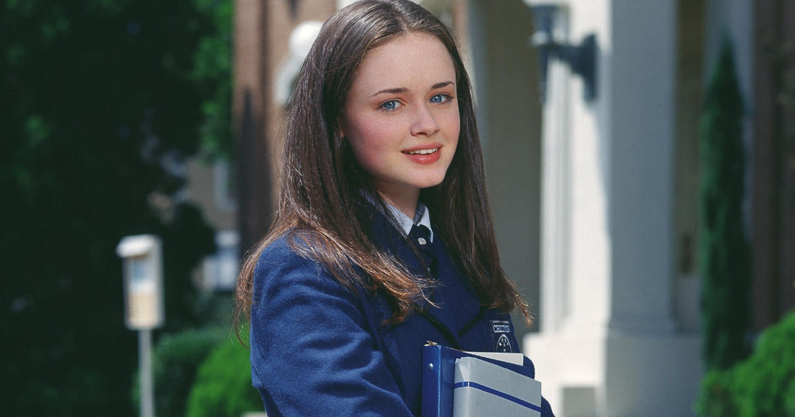

Personagens Principais

Lorelai Gilmore
Mãe independente e espirituosa, conhecida por seu humor rápido e amor incondicional pela filha.

Rory Gilmore
Filha estudiosa e curiosa, que busca equilibrar sua vida acadêmica e pessoal enquanto descobre quem é.
Luke Danes
Don Luke, dono do café local, amigo leal e interesse romântico de Lorelai, sempre pronto para ajudar.